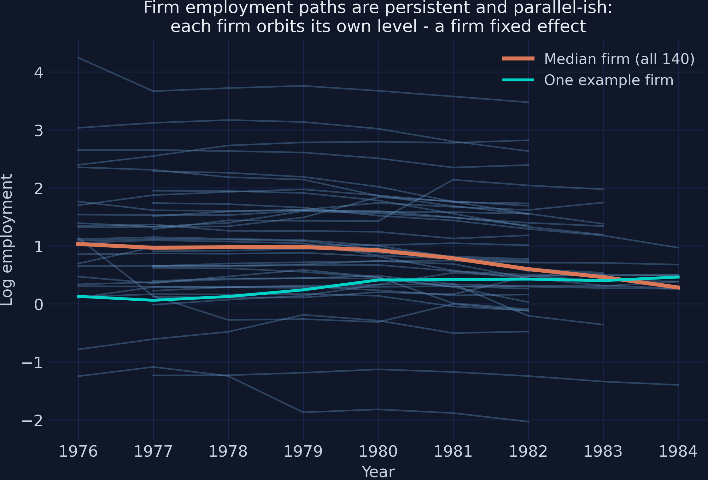
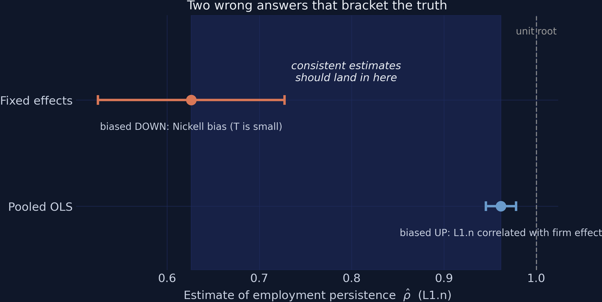
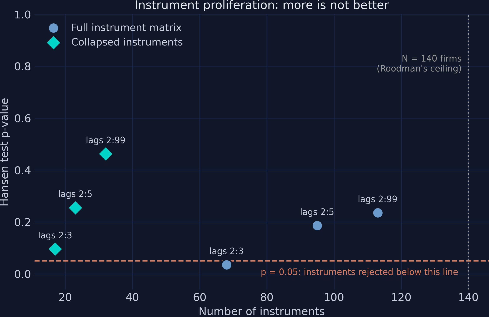
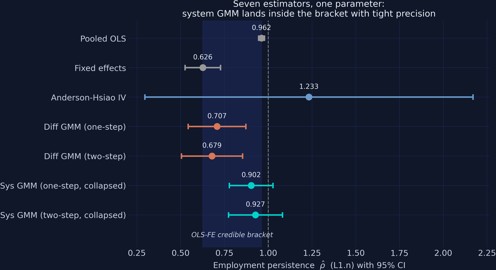

From Nickell bias to system GMM — how persistent is firm employment?
Nagoya University (GSID)
June 11, 2026
Act I
How much of this year’s employment shock is still visible next year?
The answer is one number: \(\rho\), the coefficient on lagged employment. The estimators in this deck — run on the same 140-firm UK panel — will claim \(\hat\rho = 0.626\), \(0.927\), and \(0.962\).
One of them is defensible. None of them announces which.

Each blue line is one firm, 1976–1984. Lines are parallel-ish (a firm fixed effect) and smooth (high persistence). The orange median dips after 1980 — the UK recession the year dummies absorb.
\[n_{it} = \rho\, n_{i,t-1} + \beta_1 w_{it} + \beta_2 w_{i,t-1} + \beta_3 k_{it} + \beta_4 k_{i,t-1} + \alpha_i + \delta_t + \varepsilon_{it}\]
A lagged dependent variable on the right-hand side while the firm effect \(\alpha_i\) sits in the error: \(n_{i,t-1}\) depends on \(\alpha_i\) by construction, so the regressor is correlated with the error no matter how many controls we add.
Act II

Bond’s (2002) bracket: OLS marks the ceiling, FE the floor. The shaded band is the playing field for every estimator that follows.
First-difference away \(\alpha_i\), then instrument \(\Delta n_{i,t-1}\) with the level \(n_{i,t-2}\):
| Estimate | SE | 95% CI | |
|---|---|---|---|
| \(\hat\rho\) (Anderson-Hsiao 2SLS) | 1.233 | 0.478 | [0.296, 2.170] |
The CI contains the whole bracket, the unit root, and explosive dynamics — all at once.
\[E\big[\,n_{i,t-s}\,\Delta\varepsilon_{it}\,\big] = 0 \qquad \text{for all } s \ge 2\]
Employment two or more years ago carries no information about this year’s change in shocks — and the same holds for lagged \(w\) and \(k\). Dozens of moment conditions, combined optimally by GMM.
# difference GMM: lagged LEVELS instrument the differenced equation
diff = regression.abond(
"n L(1:1).n L(0:1).w L(0:1).k | gmm(n, 2:99) gmm(w, 2:99) "
"gmm(k, 2:99) | timedumm nolevel", df, ["id", "year"])
# system GMM: drop `nolevel` (add the levels equation), collapse instruments
sys = regression.abond(
"n L(1:1).n L(0:1).w L(0:1).k | gmm(n, 2:99) gmm(w, 2:99) "
"gmm(k, 2:99) | timedumm collapse", df, ["id", "year"])| Two-step diff GMM | |
|---|---|
| \(\hat\rho\) (L1.n) | 0.679 |
| SE (Windmeijer) | 0.089 |
| Instruments | 91 |
| AR(2) p | 0.866 |
| Hansen p | 0.211 |
0.679 sits 0.053 above the FE floor of 0.626 — within one SE of the biased bound.
\[E\big[\,\Delta n_{i,t-1}\,(\alpha_i + \varepsilon_{it})\,\big] = 0\]
Even for a persistent series, last year’s change is informative about this year’s level. The price is one new assumption — mean stationarity: firms’ initial deviations from their steady states must be unrelated to \(\alpha_i\).
0.927
system GMM, two-step, 32 collapsed instruments (SE 0.079) — inside the bracket, upper half
| Two-step system GMM (collapsed) | |
|---|---|
| \(\hat\rho\) (L1.n) | 0.927 |
| SE (Windmeijer) | 0.079 |
| Instruments | 32 (vs 140 firms) |
| AR(1) p | 0.000 — rejects, as required |
| AR(2) p | 0.994 — clean |
| Hansen p | 0.462 — comfortable middle |
Act III
| Test | Correct reading | Headline value |
|---|---|---|
| AR(1) in differences | Must reject — rejection is mechanical good news | p = 0.000 ✓ |
| AR(2) in differences | Must not reject — this validates the \(t-2\) instruments | p = 0.994 |
| Hansen J | Two-tailed in spirit — p < 0.05 is invalid; p near 1 is an overwhelmed test | p = 0.462 ✓ |
| Lag window | Collapsed | Instruments | \(\hat\rho\) | Hansen p |
|---|---|---|---|---|
| 2:3 | no | 68 | 0.956 | 0.035 |
| 2:3 | yes | 17 | 0.921 | 0.096 |
| 2:5 | no | 95 | 0.935 | 0.186 |
| 2:99 | no | 113 | 0.930 | 0.235 |
| 2:99 | yes | 32 | 0.927 | 0.462 |
Same model six times; only the plumbing changes. Uncollapsed 2:3 is rejected (p = 0.035) while its collapsed twin passes — driven purely by instrument count.

Hansen p against instrument count: full matrix (steel) vs collapsed (teal), the p = 0.05 rejection line, and the 140-firm Roodman ceiling.
| Published vignette | Our run | |
|---|---|---|
| L1.n | 0.2710675 | 0.2710675 |
| Hansen \(\chi^2\) | 32.666 | 32.666 |
| Instruments | 42 | 42 |
Exact match under a hard assertion — the NumPy-2 compatibility shim perturbs nothing.

Every estimator with its 95% CI against the shaded OLS–FE bracket. Grey defines the band; blue (Anderson-Hsiao) straddles everything; orange (difference GMM) hugs the floor; teal (system GMM) lands in the upper half.
Objection. The headline CI [0.773, 1.081] contains \(\rho = 1\), mean stationarity is untestable, and one common \(\rho\) is imposed on all 140 firms.
Response. All true — which is why the claim is the point estimate and its lower bound, never “employment is stationary.” The estimate survives the bracket check, a 6-cell proliferation grid (range 0.921–0.956), clean AR(2)/Hansen, and an exact replication — and the mean-stationarity price is stated out loud, not hidden.